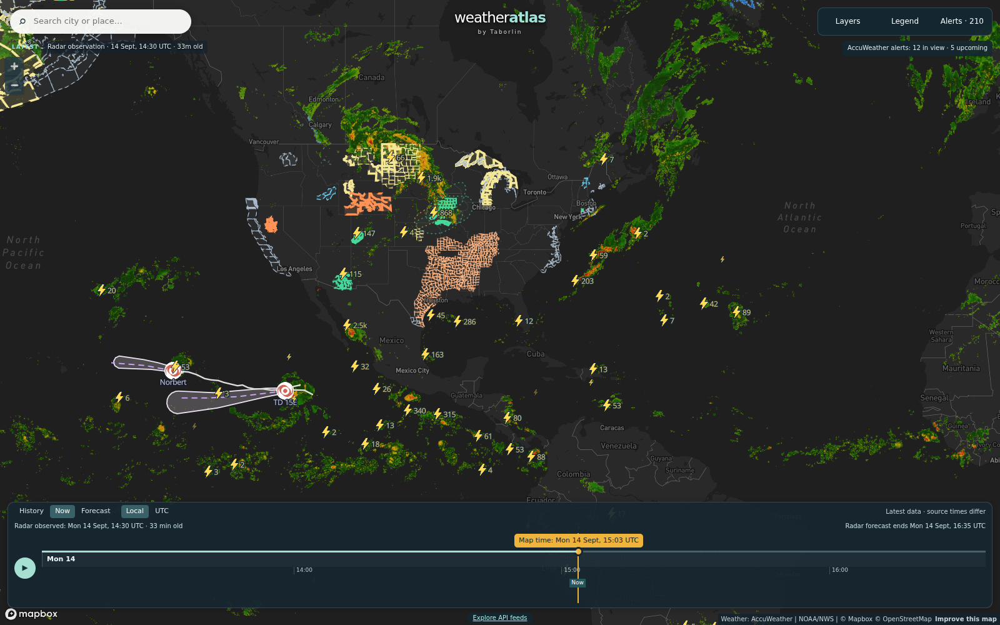

Daily severe-weather intelligence for LNG, refining, offshore, and terminal operators.

Live radar + lightning, 14 Sept 14:30 UTC — TD 15-E spinning just off southern Mexico with strikes around the center; the central Plains/Midwest cluster carries today's highest lightning density (1.9k+ strikes per cell) behind this morning's North Dakota tornado outbreak; scattered convection along the Gulf Coast and Caribbean. Interactive radar + hurricane tracker: accuweather.taborlin.co.
| System | Status | Energy-asset impact |
|---|---|---|
| Atlantic / Gulf / Caribbean | QUIET | No tropical cyclones; quiet through the 7-day outlook — Gulf LNG/refining corridor clear; good window for deferred maintenance before Wed-Thu front |
| TS Norbert (E Pacific) | WEAKENING | 40 mph tropical storm ~1,200 mi east of Hawaii, falling apart over open water — no threat to ECA LNG, Pacific tanker lanes, or Hawaii terminals beyond residual showers late week |
| TD Fifteen-E (E Pacific) | FORMING | New tropical depression just off southern Mexico with lightning around the center; drifting W — Salina Cruz-side Mexican refining out of the immediate path; watch the Mexican Pacific coast corridor this week |
| Northern Plains outbreak | TODAY | 13 tornadoes + record flash flooding across central North Dakota (Bismarck 2.44 in, a 126-year daily record); dozens of Williston-basin well sites and the Mandan refinery sat inside warning polygons all day; exiting as a 45-mph windstorm tonight |
| Rockies flash flooding | ACTIVE | Monsoon moisture driving flash-flood warnings over the Four Corners and southwest Colorado gas fields — AccuWeather reads 49-66% storm probabilities at field coordinates while free feeds read 25% or less |
| Gulf Coast convection | AFTERNOON/EVENING | Scattered afternoon-evening t-storm windows along the LA/TX and GA coasts — enterprise data reads 47-51% at terminal coordinates while free feeds read 12% and "clear" |
| First autumn cold front | WED-THU | Strong high behind the front drives moderate-to-strong E-NE winds and rough seas over the open Gulf Tue night-Thu (NWS); barge/OSV/lightering schedules need margin; improving late week |
Same hour, same coordinates (Mandan Refinery, North Dakota, this morning), two very different answers about today's rain — hours before a record 2.44-inch deluge and 13 tornadoes hit the region:
Inside today's tornado/record-flood footprint; live wind alert with 45 mph gusts tonight — free data capped at 33 mph.
Live brief →51% t-storm window at 2 PM EDT today vs 12% on free feeds — plus Wed-Thu post-frontal seas on the Atlantic side.
Live brief →Quiet tropical day at the construction corridor; afternoon storm windows and the Wed-Thu front tracked hourly.
Live brief →Asset-pinned AccuWeather + NWS alert board with lightning feed — the same data powering these briefs.
accuweather.taborlin.co →